Kachel: bestanden, Kern 2 Passa in Jerusalem, die gesehenen Zeichen und Jesu Wissen um das Innere der Menschen werden nicht ausdrücklich gezeigt.
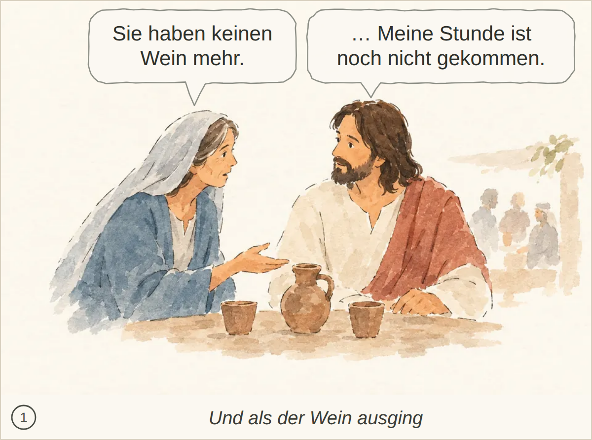
Kachel: bestanden, Kern 2 Nichts Wesentliches fehlt; die Szene und der Dialog sind klar erfasst.
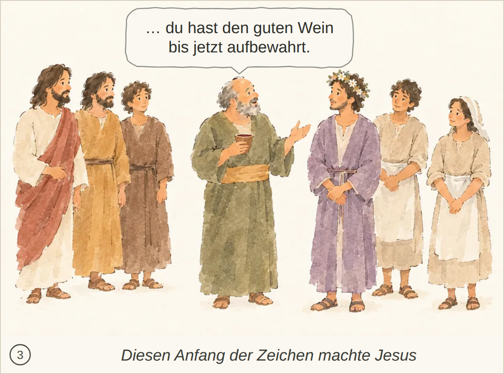
Kachel: bestanden, Kern 2 Nichts Wesentliches fehlt.
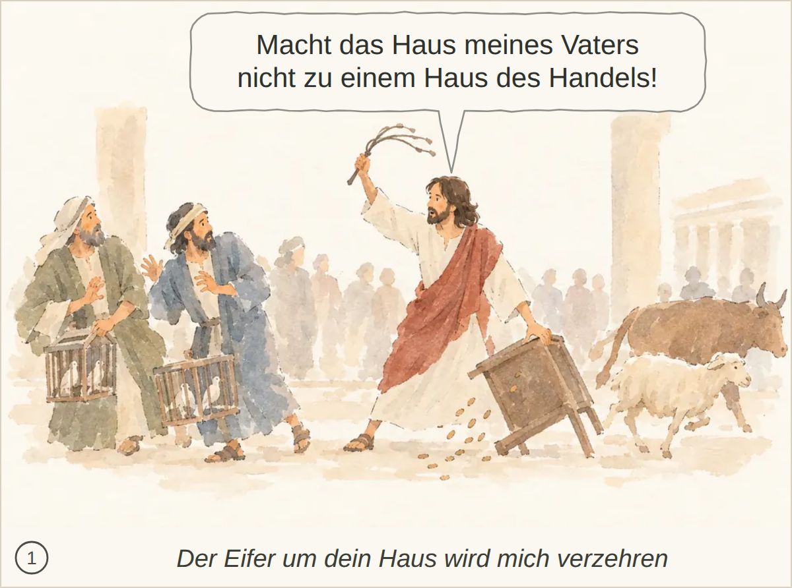
Kachel: bestanden, Kern 2 Nichts Wesentliches fehlt; die Szene wird klar erkannt.
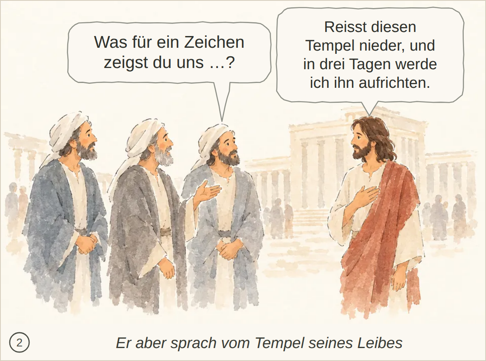
Kachel: bestanden, Kern 2 Nichts Wesentliches.
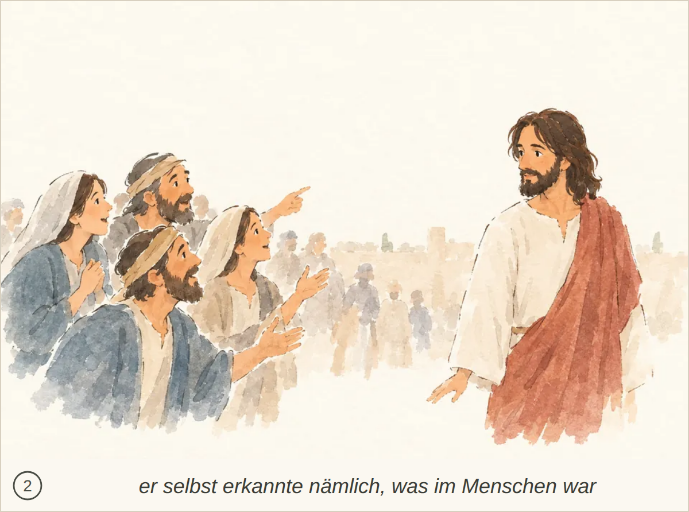
Kachel: bestanden, Kern 1 Es fehlt ausdrücklich, dass sie wegen der Zeichen glauben und dass Jesus sich ihnen nicht anvertraut.
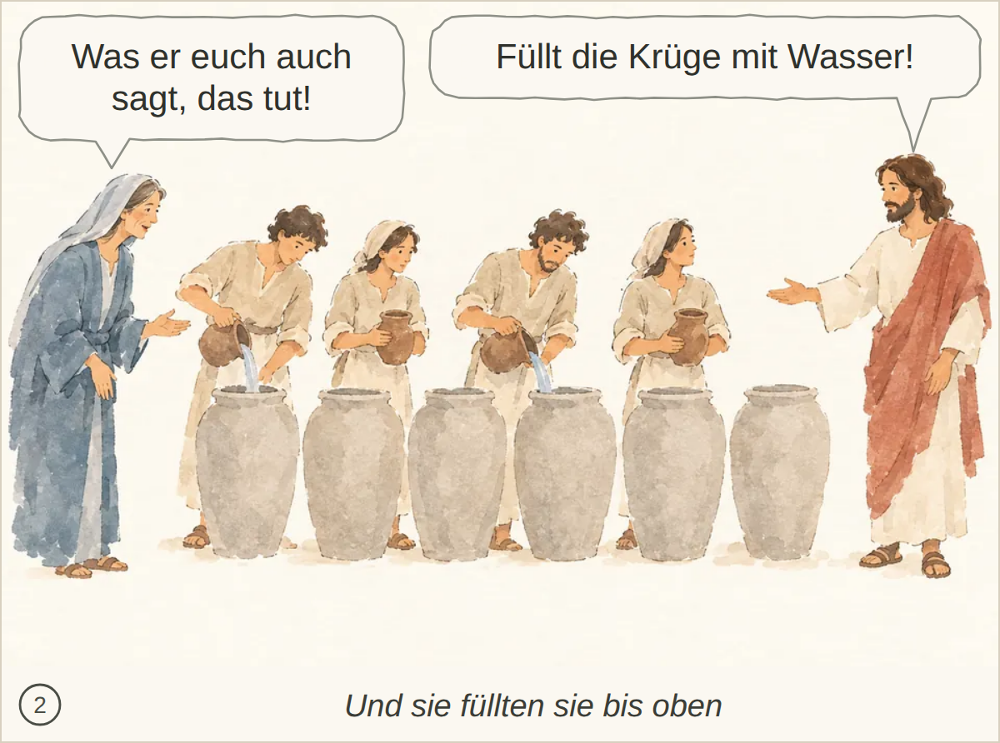
Kachel: bestanden, Kern 1 Die Aufforderung Jesu, nun zu schöpfen und es dem Speisemeister zu bringen, fehlt; auch „bis oben gefüllt“ wird nicht erwähnt.
Kachel: bestanden, Kern 2 Passa in Jerusalem, die gesehenen Zeichen und Jesu Wissen um das Innere der Menschen werden nicht ausdrücklich gezeigt.
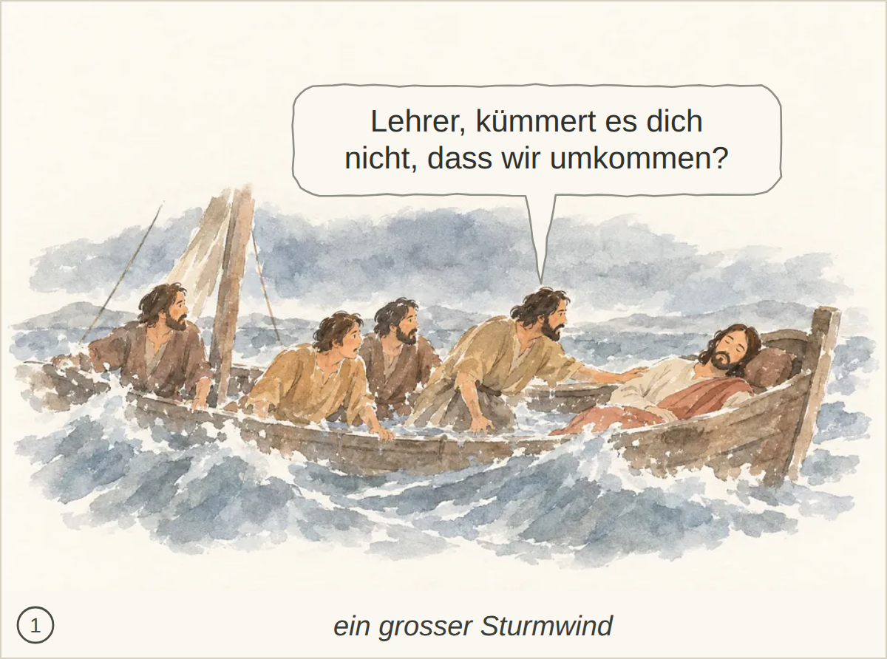
Kachel: bestanden, Kern 2 Nichts Wesentliches fehlt.
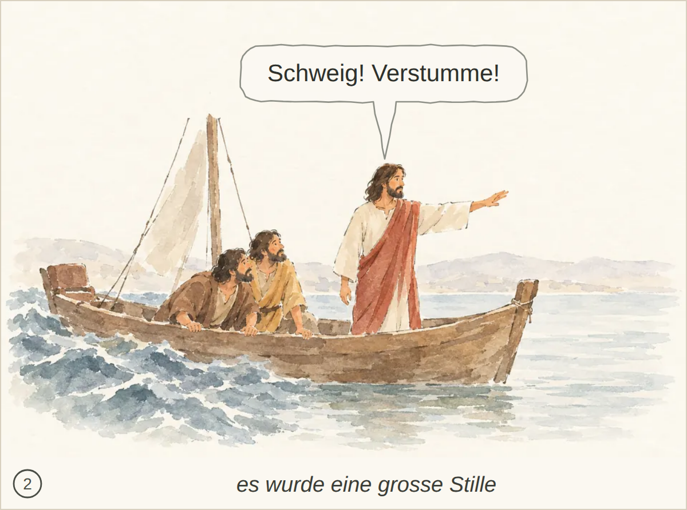
Kachel: bestanden, Kern 2 Nichts Wesentliches; die grosse Stille nach dem Befehl ist nur angedeutet.
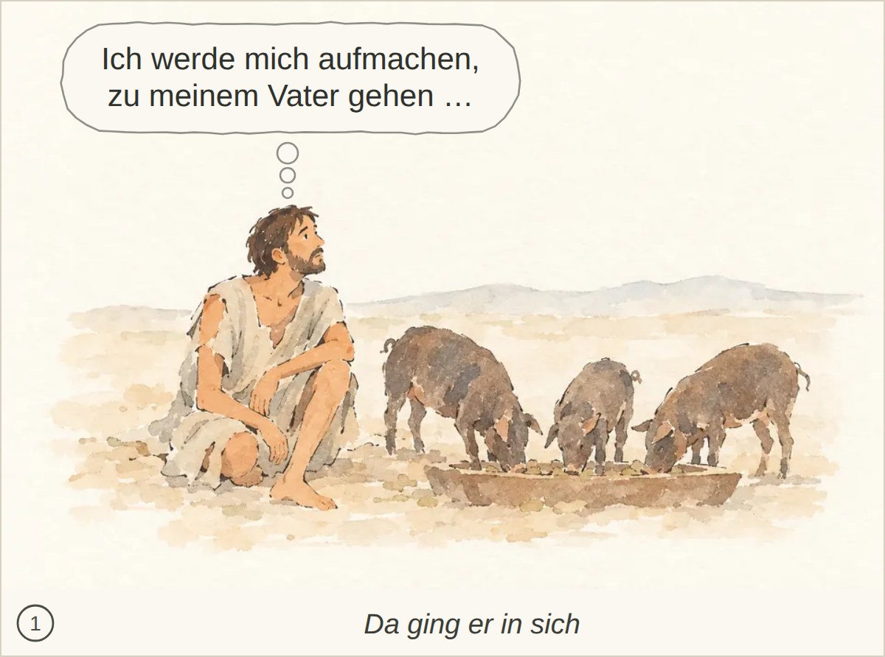
Kachel: bestanden, Kern 2 Nichts Wesentliches; Verschleudern des Erbteils, Hungersnot und der genaue Bekenntnissatz werden nicht ausdrücklich gezeigt.
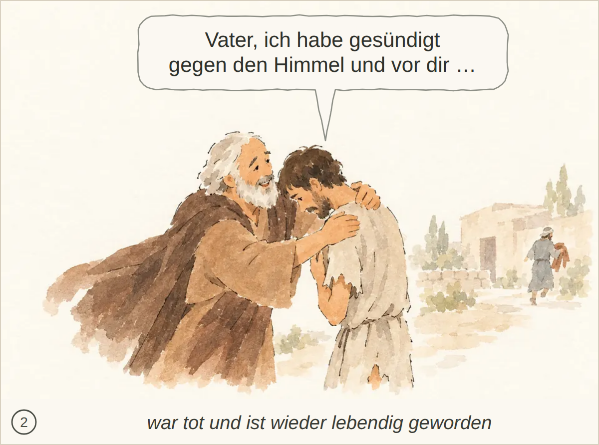
Kachel: bestanden, Kern 2 Nicht erwähnt sind das Hinlaufen und Küssen sowie die Anweisungen zu Gewand, Ring, Sandalen und Mastkalb.
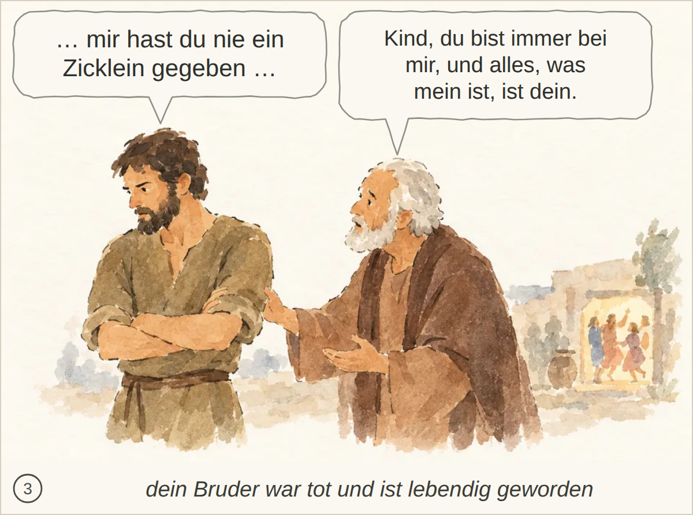
Kachel: bestanden, Kern 2 Nichts Wesentliches fehlt; der Moment wird klar erkannt.
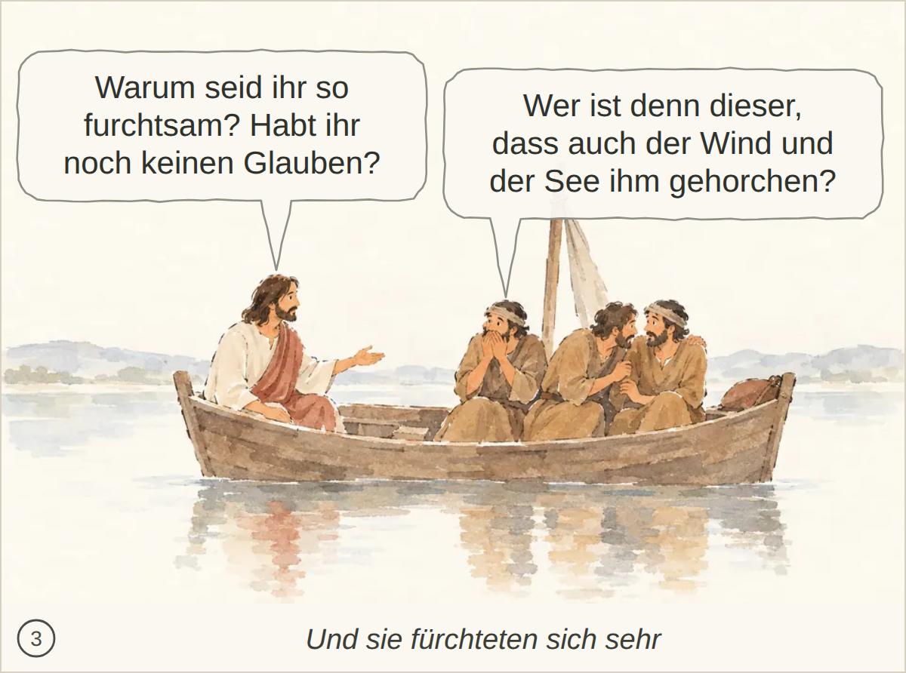
Kachel: bestanden, Kern 2 Nichts Wesentliches fehlt; die Szene und der Moment werden klar erkannt.